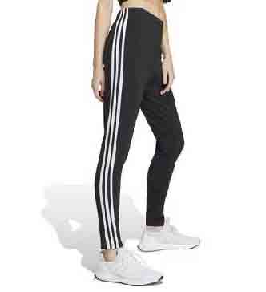

Zapatillas Adidas Mujer

Las zapatillas Adidas para mujer ofrecen una combinación ideal de estilo moderno, confort y rendimiento superior. Ya sea que necesites un par para entrenar, correr o simplemente para tus actividades diarias, Adidas cuenta con una amplia selección de modelos creados específicamente para satisfacer las preferencias y exigencias femeninas.